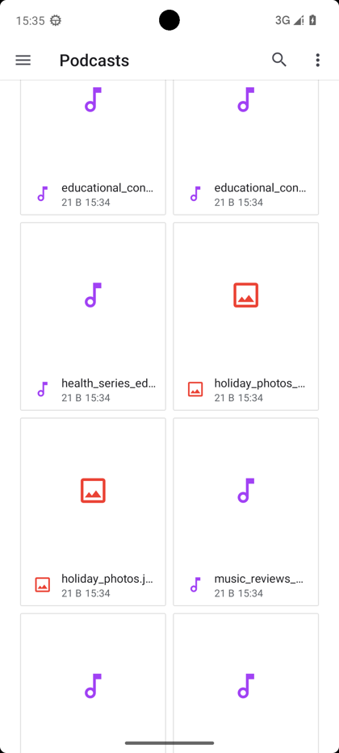
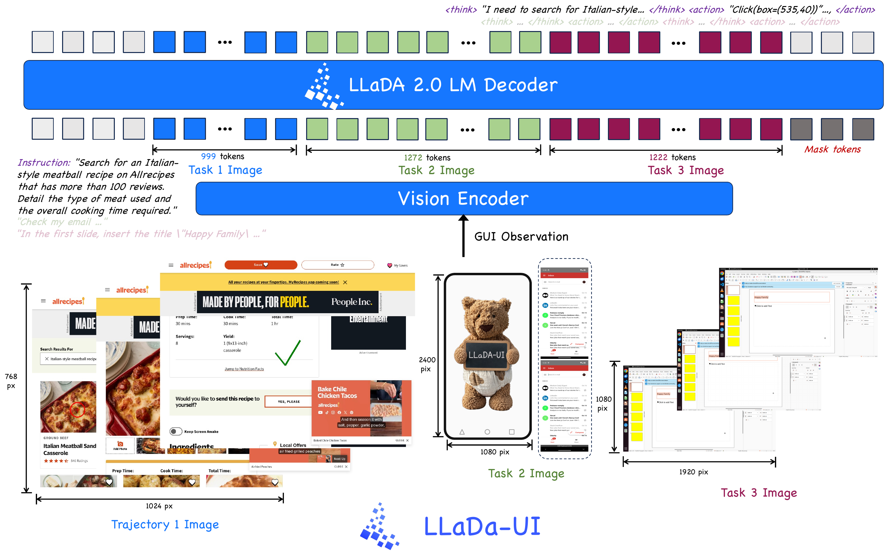
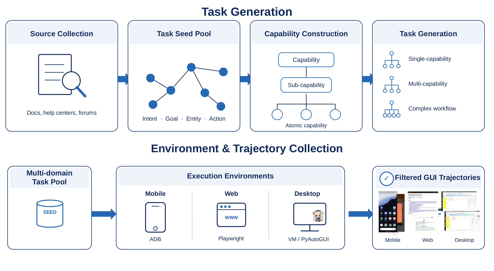

Watch a real prediction denoise
One verbatim AndroidWorld call, replayed frame by frame. The response starts as <|mask|> tokens and resolves block by block into tagged reasoning and one executable action — the observation is uncropped and the output complete; only line wrapping and typography are changed.

holiday_photos.jpg from Podcasts to DCIM in the
same Android storage area.
Every frame is the recorded model state at one denoising step — reasoning, action tags, and
special tokens included. The final frame emits
<action>LongPress(box=(x,y))</action>-style executable output.
Two more complete cases
Two further AndroidWorld denoising sequences, exactly as in the report: the first forms a numeric
entry action with Type, the second grounds a list item before producing the
Click. Each frame carries its own uncropped observation, task, and full model output,
including reasoning, action tags, and special tokens.
Diffusion language models, put to work on screens
GUI agents must repeatedly perceive screen states and emit structured, spatially grounded actions in real time — a natural testbed for diffusion LLMs, whose block-parallel, arbitrary-order generation promises low latency. LLaDA-UI answers the open question of whether that promise survives contact with interactive screens: it substantially outperforms Qwen2.5-VL-7B and surpasses the similarly scaled Qwen3-VL-8B on four of six reported GUI benchmarks, while keeping the parallel-decoding advantage.
Each axis is normalized to the best displayed raw score (printed under the axis name), mirroring Figure 1 of the report.
What the report establishes
Four results that together make block-wise diffusion a practical generative paradigm for multimodal GUI agents.
The first practical diffusion GUI agent
Diffusion VLMs such as LLaDA-V and SDAR-VL showed an alternative to autoregressive multimodal generation, and diffusion has been explored for static GUI grounding. LLaDA-UI is the first open-source diffusion vision–language agent that repeatedly perceives changing screens, produces executable actions, and completes long-horizon tasks in dynamic environments like AndroidWorld, MobileWorld, OSWorld, and WebVoyager.
Block-parallel decoding, measured
In a controlled paired evaluation with identical serving hardware and no cache hits, LLaDA-UI answers in 4.8–6.4 s where Qwen3-VL-8B needs 17–53 s — 3.58× / 6.83× / 8.95× mean speedups on web, desktop, and mobile inputs, while generating more tokens per call.
A deliberately simple two-stage recipe
145B tokens of general multimodal pre-training align a native-resolution SigLIP ViT with the LLaDA2.0-mini-base diffusion backbone — competitive with VLMs trained on trillions — then GUI-agent SFT on 6M+ samples from the UI-Venus project adds executable behavior across mobile, desktop, web, and grounding.
Tagged reasoning, executable actions
Every navigation target is a tagged <think>…</think>
response with spatial outputs normalized to [0,1000]; grounding returns the target point directly.
GUI-agent SFT keeps the block diffusion objective and MoE balancing from
pre-training, where mask-token reweighting and complementary masking balance learning across
targets of substantially different lengths.
Three components, one denoising decoder
GUI observations from web, mobile, and desktop environments are encoded at native resolution and interleaved with task and interaction-history tokens; the block-wise diffusion decoder progressively denoises masked output positions into structured reasoning and executable actions.

<think>…</think>
<action>…</action> responses.
Diffusion language model
LLaDA2.0-mini-base — a 16.7B-parameter MoE diffusion LLM following an architecture similar to Ling2.0. Block-wise masked diffusion lets multiple tokens within the current block be refined in parallel instead of one at a time.
MoE · 16.7B total parametersVision encoder
A SigLIP-initialized ViT that ingests screenshots at native resolution and uses 2D rotary positional embeddings to capture the spatial layout that grounding decisions depend on.
native resolution · 2D RoPEVision–language projector
Groups every four spatially adjacent visual features, then projects them through a two-layer MLP into the LLM embedding space — substantially reducing computational overhead while flexibly compressing image feature sequences of varying lengths.
4× spatial merge · 2-layer MLPAlign first, then act
The vision encoder and the diffusion backbone are pre-trained independently, so stage one aligns their representation spaces on general multimodal data (145B tokens, three-phase curriculum); stage two teaches executable screen behavior with GUI-agent supervised fine-tuning.
Vision–language alignment
High-quality image–caption pairs and visual knowledge collections teach the ViT to produce representations the language model can use — alignment before any full-parameter training.
- 5B tokens · 16K sequence
- trains the projector only
Perception enhancement
All components unfreeze for joint end-to-end training on OCR, grounding, counting, interleaved image–text, and pure text that preserves the backbone's language ability.
- 70B tokens · 16K sequence
- all parameters trainable
Multi-task pre-training
Reasoning-intensive data lands last: multimodal VQA, multimodal mathematics, and agent-based tasks that build deeper connections between the visual and linguistic modalities.
- 70B tokens · 16K sequence
- all parameters trainable
GUI-agent SFT: the data
6M+ samples after conversion, filtering, and deduplication, accumulated through the UI-Venus project across four complementary domains: mobile navigation spanning 100+ Chinese and 70+ English apps, desktop and web data covering cross-application and browser workflows, and grounding data connecting language instructions to visual targets.
GUI-agent SFT: the recipe
Initialized from the multimodal foundation and fine-tuned end to end for three epochs at peak LR 1×10−5 (cosine decay, 3% warmup), 16K max sequence length, mixed precision, micro-batch size one per GPU, ~12.8M max image pixels, on 32–64 H100 GPUs — retaining the block diffusion objective and MoE balancing from pre-training.

<think> visible reasoning over the task, history, and current screen </think> <action>Click(box=(x,y))</action> // available actions (mobile shown; desktop adds RightClick/Hotkey, web adds Scroll/Launch/Hover/Hotkey) Click · DoubleClick · LongPress · Drag · Swipe · Type(content='') LaunchApp(app='') · Wait() · CallUser(content='') · GetScreenshot() PressBack() · PressHome() · PressEnter() · PressRecent() Answer(content='') · Finished(content='') // all coordinates normalized to (0,0)–(999,999) // grounding answers directly: [x,y], or [-1,-1] if infeasible
<think><action>
turn; historical screenshots are never replayed (MobileWorld keeps no environment-side history,
OSWorld keeps one turn, WebVoyager places the task in the system prompt).
Benchmark results
Grounding and navigation after GUI-agent SFT, the multimodal foundation before it, paired latency, and the failure analysis — every number from the technical report, with full comparison tables under each chart group.
Static grounding (point-in-box accuracy) and end-to-end navigation success in executable environments. LLaDA-UI exceeds Qwen2.5-VL-7B on every reported benchmark and is stronger than Qwen3-VL-8B on ScreenSpot-Pro, AndroidWorld, MobileWorld, and WebVoyager; ScreenSpot-V2 is close and OSWorld-Verified remains the main gap. Spatial outputs are normalized to [0,1000] and executed by each benchmark runner; both the standalone Hugging Face inference path and the OpenAI-compatible SGLang serving path (two data-parallel workers on a two-GPU host) were validated end to end.
Full comparison table — Grounding & Navigation
The foundation checkpoint before GUI-agent SFT, trained on just 145B multimodal tokens (Qwen2.5-VL: 4.1T; Qwen3-VL: 2.2T), sets a new state of the art among diffusion MLLMs (leading on 18 of 22 benchmarks) — relative gains of 12.8% / 13.6% / 31.1% over SDAR-VL-8B on MathVista, MathVision, and MathVerse, and 2.5% / 8.6% / 17.8% on ChartQA, CharXiv-DQ, and OCRBench. Six representative benchmarks below; all 22 in the full table.
Full comparison table — General multimodal (22 benchmarks)
Paired non-cached API latency against Qwen3-VL-8B: both models on four H100 GPUs, 2,048-token generation cap, normal EOS stopping, model wall-clock time only (environment reset and action execution excluded), five non-cache-hit calls per domain — exact Qwen replays that hit its serving cache are excluded, and visually equivalent screenshots with different PNG hashes complete its non-cached sample sets. LLaDA-UI generates more tokens per call and still answers several times sooner.
5.9 s versus 53.0 s mean latency per call on MobileWorld inputs. Median speedups across web, desktop, and mobile: 3.43×, 6.78×, and 8.81×.
Qwen3-VL-8B also has an exact-replay cache-hit mode (0.890–1.284 s on Web, 1.444 s on OSWorld, 1.746–1.794 s on MobileWorld) that the evaluated LLaDA-UI SGLang stack does not expose; it is reported separately in the paper because normal GUI interaction produces a new screenshot at each step. These fixed-input measurements characterize per-call latency rather than serving throughput.
A complete 116-task AndroidWorld evaluation of an intermediate LLaDA-UI checkpoint (1,849 model steps; diagnostics separate from the final benchmark results) shows the model reliably obeys the structured format — failures come from long-horizon recovery and high-resolution grounding, not malformed output.
Decoding ablation — AndroidWorld, intermediate checkpoint
| Decode setting | EOS policy | Block | Steps | Success | Avg. actions |
|---|---|---|---|---|---|
| Baseline | Early stop | 32 | 32 | 42.7% (50/116) | 14.9 |
| Two-stage decoding | Early stop | 32 | 32 | 50.9% (58/115) | 13.7 |
| No-EOS | Disabled | 32 | 32 | 52.6% (61/116) | 15.8 |
| Larger block / fewer steps | Default | 64 | 16 | 33.0% (38/115) | 15.1 |
Where the failures live: exact repetition rises from 5.41% of steps in successful trajectories to 26.70% in failed ones, and success drops from 62.96% on tasks needing at most five optimal actions to 14.29% beyond twenty. On OSWorld a different bottleneck dominates — much larger screenshots with smaller targets expose insufficient high-resolution perception and inaccurate pointing.
Three complete, successful trajectories
Recorded end to end on WebVoyager, OSWorld, and MobileWorld. Every frame pairs the current GUI
observation with the model's verbatim <think> and <action>
output for that step — step through them or let them play.
Constrained flight search
WebVoyager · 20 stepsLong-horizon constraint tracking on the web: find the one-way Calgary→New York flight on a fixed date with the lowest CO₂ emissions, keeping the constraint in mind across twenty steps of forms, filters, and result lists.
Calc table into Writer
OSWorld · 10 stepsFormatted content transfer between desktop applications: copy a formatted LibreOffice Calc table into Writer and save the resulting document.
Email to alarm
MobileWorld · 12 stepsCross-application information use on mobile: read an event time from an email, then set an alarm one hour earlier in the clock app.
A viable new direction — stated with its caveats
As the first open-source diffusion GUI agent, LLaDA-UI demonstrates that diffusion language models offer a viable new direction for vision–language agents. The report is equally explicit about where it still falls short:
BibTeX
If you find LLaDA-UI useful, please cite the technical report. arXiv SOON
@article{lladaui2026,
title = {LLaDA-UI: Bringing Block-wise Diffusion to Vision-Language GUI Agents},
author = {Gu, Zhangxuan and Chen, Haoxing and Qin, Qi and Xin, Yi and Gan, Kai and
Liu, Lin and Cui, Long and Wang, Xiaomei and Zhou, Beitong and Zhang, Yunzhu and
Zeng, Zhengwen and Gao, Changlong and Chen, Weizhi and Zhang, Rongchao and Wu, Haoyuan and
Shen, Shuheng and Meng, Changhua and Wang, Weiqiang and Li, Jianguo and Lan, Zhenzhong},
journal = {arXiv preprint arXiv:XXXX.XXXXX},
year = {2026}
}